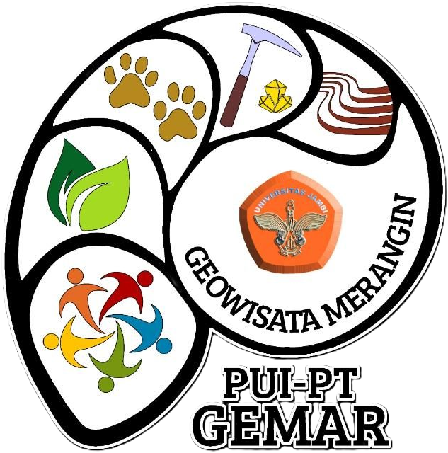

<!DOCTYPE html>
<html lang="en">
  <head>
    <meta charset="UTF-8" />
    <meta name="viewport" content="width=device-width, initial-scale=1.0" />
    <title>Artikel</title>
    <link href="../../css/outputadmin.css" rel="stylesheet" />
    <link
      rel="stylesheet"
      href="https://cdnjs.cloudflare.com/ajax/libs/font-awesome/6.0.0-beta3/css/all.min.css"
    />
    <link
      href="https://fonts.googleapis.com/css2?family=Lato:ital,wght@0,100;0,300;0,400;0,700;0,900;1,100;1,300;1,400;1,700;1,900&family=Lora:ital,wght@0,400..700;1,400..700&family=Montserrat:ital,wght@0,100..900;1,100..900&family=Poppins:ital,wght@0,100;0,200;0,300;0,400;0,500;0,600;0,700;0,800;0,900;1,100;1,200;1,300;1,400;1,500;1,600;1,700;1,800;1,900&family=Roboto:ital,wght@0,100;0,300;0,400;0,500;0,700;0,900;1,100;1,300;1,400;1,500;1,700;1,900&display=swap"
      rel="stylesheet"
    />
    <link
      rel="stylesheet"
      href="https://cdn.jsdelivr.net/npm/sweetalert2@11/dist/sweetalert2.min.css"
    />
  </head>

  <body class="bg-gray-100 font-poppins">
    <div class="flex h-screen overflow-hidden">
      <!-- Sidebar -->
      <div
        id="sidebar"
        class="fixed inset-y-0 left-0 z-30 w-64 bg-indigo-900 shadow-lg transform -translate-x-full transition-transform duration-300 ease-in-out"
      >
        <div class="flex items-center justify-center px-4 py-4">
          
        </div>
        <nav class="mt-8 ml-2">
          <a
            href="../berandaadmin/indexadmin.html"
            class="block px-4 py-2 text-md text-white hover:bg-gray-600"
            >Dashboard</a
          >
          <div class="relative">
            <a
              href="#"
              id="profilSubMenuToggle"
              class="block px-4 py-2 text-md text-white hover:bg-gray-600 items-center"
            >
              Profil <i class="fas fa-caret-down ml-2"></i>
            </a>
            <div id="profilSubMenu" class="ml-4 hidden">
              <a
                href="../profiladmin/sejarahadmin.html"
                class="block px-4 py-2 text-sm text-white hover:bg-gray-600"
                >Sejarah</a
              >
              <a
                href="../profiladmin/visimisiadm.html"
                class="block px-4 py-2 text-sm text-white hover:bg-gray-600"
                >Visi Misi</a
              >
              <a
                href="../profiladmin/strukturoradmin.html"
                class="block px-4 py-2 text-sm text-white hover:bg-gray-600"
                >Struktur Organisasi</a
              >
              <a
                href="../profiladmin/timadm.html"
                class="block px-4 py-2 text-sm text-white hover:bg-gray-600"
                >Tim</a
              >
            </div>
          </div>
          <div class="relative">
            <a
              href="#"
              id="sumberdayaSubMenuToggle"
              class="block px-4 py-2 text-md text-white hover:bg-gray-600 items-center"
            >
              Sumber Daya <i class="fas fa-caret-down ml-2"></i>
            </a>
            <div id="sumberdayaSubMenu" class="ml-4 hidden">
              <a
                href="artikeladm.html"
                class="block px-4 py-2 text-sm text-white hover:bg-gray-600"
                >Artikel</a
              >
              <a
                href="../sumberdayaadmin/hkiadmin.html"
                class="block px-4 py-2 text-sm text-white hover:bg-gray-600"
                >HKI</a
              >
              <a
                href="kegiatanadm.html"
                class="block px-4 py-2 text-sm text-white hover:bg-gray-600"
                >Kegiatan</a
              >
              <a
                href="persebaran.html"
                class="block px-4 py-2 text-sm text-white hover:bg-gray-600"
                >Persebaran UMKM</a
              >
            </div>
          </div>
          <a
            href="../museumadmin/museumadmin.html"
            class="block px-4 py-2 text-md text-white hover:bg-gray-600"
            >Museum</a
          >
          <div class="relative">
            <a
              href="#"
              id="kontakSubMenuToggle"
              class="block px-4 py-2 text-md text-white hover:bg-gray-600 items-center"
            >
              Kontak <i class="fas fa-caret-down ml-2"></i>
            </a>
            <div id="kontakSubMenu" class="ml-4 hidden">
              <a
                href="../kontak/editkontak.html"
                class="block px-4 py-2 text-sm text-white hover:bg-gray-600"
                >Edit Kontak</a
              >
            </div>
          </div>
        </nav>
      </div>

      <!-- Main content -->
      <div
        id="main-content"
        class="flex-1 flex flex-col overflow-hidden transition-all duration-300 ease-in-out ml-0"
      >
        <!-- Header -->
        <nav class="bg-indigo-50 border-b border-gray-200">
          <div class="max-w-7xl mx-auto px-4 sm:px-6 lg:px-8">
            <div class="flex justify-between h-16">
              <div class="flex items-center">
                <button
                  id="menu-button"
                  class="text-indigo-900 hover:text-gray-400 focus:outline-none"
                  aria-label="Toggle Sidebar"
                >
                  <i class="fas fa-bars fa-lg"></i>
                  <span class="sr-only">Toggle Sidebar</span>
                </button>
              </div>
              <div class="flex items-center ml-3">
                <div class="relative">
                  <!-- Profile Button -->
                  <button
                    id="profile-menu-button"
                    class="flex text-sm border-2 border-transparent rounded-full focus:outline-none focus:border-transparent"
                  >
                    
                    <i
                      id="profile-icon"
                      class="fas fa-user-circle fa-lg text-white"
                    ></i>
                  </button>

                  <!-- Profile Menu -->
                  <div
                    id="profile-menu"
                    class="origin-top-right absolute right-0 mt-2 w-48 rounded-md shadow-lg py-1 bg-gray-700 ring-1 ring-black ring-opacity-5 hidden"
                    role="menu"
                    aria-orientation="vertical"
                    aria-labelledby="profile-menu-button"
                  >
                    <a
                      href="../akunadmin/editakunprofil.html"
                      class="block px-4 py-2 text-sm text-white hover:bg-gray-400"
                      role="menuitem"
                      >Edit</a
                    >
                    <a
                      href="#"
                      class="block px-4 py-2 text-sm text-white hover:bg-gray-400"
                      role="menuitem"
                      >Logout</a
                    >
                  </div>
                </div>
              </div>
            </div>
          </div>
        </nav>
        <!-- Content -->
        <main class="flex-1 bg-gray-100 p-4 overflow-y-auto mx-3">
          <div
            id="content"
            class="transition-transform duration-500 ease-in-out"
          >
            <h1 class="text-4xl font-bold text-indigo-900 mt-6 mb-5">
              Artikel
            </h1>

            <!-- Artikel 1 -->
            <div class="mb-8 mt-12">
              <a
                href="https://journal.uinmataram.ac.id/index.php/transformasi/article/view/8590/3002"
                class="block text-xl font-semibold text-indigo-900 mb-0"
                >DIGITALIZATION OF MENGKARANG GEOPARK MINIATURE UNIVERSITAS
                JAMBI AS AN EFFORT TO SUPPORT THE SUMMER COURSE PROGRAM
              </a>
              <p class="text-sm text-gray-500 mb-2">2018-06-30</p>
              <p class="text-gray-800 leading-relaxed text-justify">
                Perkembangan ilmu pengetahuan di era Revolusi Industri 4.0 dan
                Society 5.0 merupakan fenomena yang serba digital, termasuk ilmu
                kebumian. Konsep ini menggunakan ilmu pengetahuan berbasis
                kecerdasan buatan untuk kebutuhan pendidikan yang serba cepat
                dan nyaman. Kaitannya dengan bidang pendidikan ilmu kebumian
                adalah studi tentang fenomena bentang alam dan singkapan batuan
                sebagai hasil dari proses alamiah. Situasi Universitas Jambi
                yang jauh dari keberadaan singkapan batuan sebagai objek
                pembelajaran memberikan tantangan besar untuk dapat
                mengidentifikasi batuan yang ada dengan cepat. Keberadaan
                miniatur Geopark Mengkarang di Universitas Jambi dapat menjadi
                solusi yang efektif dalam pembelajaran di bidang kebumian.
                Sehingga, melalui digitalisasi dapat menjadi alternatif yang
                diminati dalam media pembelajaran, khususnya untuk kegiatan
                short summer course yang berkaitan dengan geopark. Upaya
                digitalisasi ini merupakan bagian dari kegiatan pengabdian dan
                peran serta civitas akademika Universitas Jambi dalam melakukan
                inovasi pembelajaran. Dalam pelaksanaan kegiatan pengabdian ini
                pengumpulan data dilakukan dengan mendeskripsikan 28 sampel
                batuan dari Kawasan UNESCO Global Geopark Merangin Jambi.
                Digitalisasi meliputi pembuatan label informasi untuk setiap
                tampilan batuan yang dilengkapi dengan barcode untuk memudahkan
                akses. Akses ini bertujuan untuk memberikan informasi yang lebih
                detail mengenai proses pembentukan setiap batuan. Kegiatan
                pengabdian ini secara signifikan berkontribusi dalam mendukung
                kegiatan summer course di Fakultas Sains dan Teknologi,
                Universitas Jambi. Selain membantu kegiatan summer course,
                diharapkan melalui digitalisasi ini, Universitas Jambi dapat
                memainkan peran penting dalam mendukung situs yang telah diakui
                sebagai situs warisan dunia oleh UNESCO ini.
              </p>
              <div class="flex items-center mt-4 space-x-4">
                <button
                  class="flex items-center text-gray-400 hover:text-blue-400 transition duration-300 commentBtn"
                  data-article-id="1"
                >
                  <i class="far fa-comment mr-1"></i>
                  <span class="commentCount" data-article-id="1">2</span>
                </button>
              </div>
              <!-- Edit and Delete Buttons -->
              <div class="flex justify-end mt-2">
                <a href="edtartikel1.html">
                  <button class="mx-2 text-amber-500 hover:text-amber-600">
                    <i class="fas fa-edit"></i>
                  </button>
                </a>
                <button
                  class="mx-2 text-red-600 hover:text-red-800"
                  onclick="confirmDelete(this)"
                >
                  <i class="fas fa-trash"></i>
                </button>
              </div>
              <hr class="border-gray-800 my-1" />
            </div>

            <!-- Artikel 2 -->
            <div class="mb-8">
              <a
                href="https://mail.online-journal.unja.ac.id/jop/article/view/28588/16633"
                class="block text-xl font-semibold text-indigo-900 mb-2"
                >PALEOVOLCANIC KARING RECONSTRUCTION IN THE MERANGIN JAMBI
                UNESCO GLOBAL GEOPARK TERRITORY BASED ON PETROLOGICAL AND
                GEOCHEMICAL APPROACH
              </a>
              <p class="text-sm text-gray-500 mb-2">01 April 2024</p>
              <p class="text-gray-800 leading-relaxed text-justify">
                The presence of lava and pyroclastic sequences in the Karing
                River on the Merangin Jambi UNESCO Global Geopark territory
                provides information about the existence of ancient volcanoes.
                The absence of confirmed rock formations from the distribution
                of volcanic rock products that have been mapped nationally and
                also the shape of this ancient volcanic body, is an important
                reason for this research to be carried out using a petrological
                approach using petrography and XRF gochemical methods.
                Petrographic analysis is an appropriate method to determine the
                mineralogy consist, textures and particular textures, rock
                structures that are confirmed from field data. Meanwhile, a
                geochemical approach is used to determine rock oxide compounds.
                This method aims to reconstruct the shape and type of volcanoes.
                Research data shows that there are four lava sequences, with
                Sequence 1 having an entablature structure, Sequence 2 and
                Sequence 3 having a flow structure, and Sequence 4 having a
                vesicularflow structure. The petrography results show that
                Sequence 1 and Sequence 2 are composed of phenocrysts and
                microliths of plagioclase, olivine, clinopyroxene,
                orthopyroxene. Meanwhile, in Sequence 3, hornblende is present,
                and in Sequence 4, the mineral olivine is absent. The results of
                geochemical analysis from the four lava sequences are in basalt
                rocks with 40%-50% Silica content, Calk-alkali basalt magma
                series, petrogenesis interpreted from the convergence of oceanic
                subduction beneath continent. The pyroclastic rocks found at the
                bottom of the lava sequence are evidence of the stratigraphic
                structure that makes up a volcano originating from the Karing
                Paleovolcanic, while the pyroclastic rocks found at the top of
                the lava sequence are believed to originate from other ancient
                volcanic eruptions. With the stratigraphy composed of lava and
                pyroclastic sequences, it can be concluded that this ancient
                volcano is a strato volcano type which is relatively sloping and
                almost resembles a shield volcano.
              </p>
              <div class="flex items-center mt-4 space-x-4">
                <button
                  class="flex items-center text-gray-400 hover:text-blue-400 transition duration-300 commentBtn"
                  data-article-id="2"
                >
                  <i class="far fa-comment mr-1"></i>
                  <span class="commentCount" data-article-id="2">0</span>
                </button>
              </div>
              <!-- Edit and Delete Buttons -->
              <div class="flex justify-end mt-4">
                <a href="#">
                  <button class="mx-2 text-amber-500 hover:text-amber-600">
                    <i class="fas fa-edit"></i>
                  </button>
                </a>
                <button
                  class="mx-2 text-red-600 hover:text-red-800"
                  onclick="confirmDelete(this)"
                >
                  <i class="fas fa-trash"></i>
                </button>
              </div>
            </div>
            <hr class="border-gray-800 my-1" />

            <!-- Artikel 3 -->
            <div class="mb-8">
              <a
                href="https://jss.lppm.unila.ac.id/index.php/ojs/article/view/479/296"
                class="block text-xl font-semibold text-indigo-900 mb-2"
                >PERAN PERGURUAN TINGGI DALAM PEMBANGUNAN KEBERLANJUTAN GEOPARK
                DI UGGp MERANGIN JAMBI</a
              >
              <p class="text-sm text-gray-500 mb-2">01 April 2024</p>
              <p class="text-gray-800 leading-relaxed text-justify">
                Perguruan tinggi merupakan satu aktor penting dalam pembangunan
                Geopark Merangin Jambi menjadi UNESCO Global Geopark Merangin
                Jambi. Pembangunan berkelanjutan di kawasan geopark melibatkan
                masyarakatlokal sebagai hal yang terpenting di dalam geopark.
                Perguruan tinggi dalam kegiatan tri dharma dapat diaplikasi
                dalam kegiatan pengabdian kepada masyrakat yang terkait dengan
                geopark, dalam hal ini sebagai upaya edukasi dan konservasi
                warisan geologi yang ada di kawasan geopark. Pelaksanaan
                pengabdian melibatkan sivitas akademika Universitas Jambi, Badan
                Pengelola Geopark Merangin Jambi, Universitas Merangin, dan
                Pemerintah Kabupaten Merangin serta Pemerintah Provinsi Jambi.
                kegiatan pengabdian yang dilakukan seperti Geopark Goes to
                School, Campus Goes to Geopark, Keterampilan Masyrakat, dan
                Konferensi Internasional. Berdasarkan kegiatan yang telah
                dilakukan, bahwa kegiatan pengabdian ini dapat terlaksana dengan
                baik dalam bentuk konsep edukasi dan konservasi pada warisan
                geologi dalam tiga pilar penting dari geopark, yaitu
                kenaekaragaman geologi, kenaekaragaman hayati, dan
                keanekaragaman budaya. Dalam pelaksanaan kegiatan pengabdian ini
                dapat disimpulkan bahwa pentingnya peran perguruan tinggi
                terhadap pembangunan yang berkelanjutan di Kawasan UNESCO Global
                Geopark Merangin Jambi.
              </p>
              <div class="flex items-center mt-4 space-x-4">
                <button
                  class="flex items-center text-gray-400 hover:text-blue-400 transition duration-300 commentBtn"
                  data-article-id="3"
                >
                  <i class="far fa-comment mr-1"></i>
                  <span class="commentCount" data-article-id="3">0</span>
                </button>
              </div>
              <!-- Edit and Delete Buttons -->
              <div class="flex justify-end mt-4">
                <a href="#">
                  <button class="mx-2 text-amber-500 hover:text-amber-600">
                    <i class="fas fa-edit"></i>
                  </button>
                </a>
                <button
                  class="mx-2 text-red-600 hover:text-red-800"
                  onclick="confirmDelete(this)"
                >
                  <i class="fas fa-trash"></i>
                </button>
              </div>
            </div>
            <hr class="border-gray-800 my-1" />
            <!-- Artikel 4 -->
            <div class="mb-8">
              <a
                href="https://mail.online-journal.unja.ac.id/jtk/article/view/30898"
                class="block text-xl font-semibold text-indigo-900 mb-2"
                >Geologi dan Lingkungan Pengendapan Batupasir Formasi Talang
                Akar Daerah Lubuk Mandarsah Kecamatan Tengah Ilir Kabupaten
                Tebo, Provinsi Jambi</a
              >
              <p class="text-sm text-gray-500 mb-2">01 April 2024</p>
              <p class="text-gray-800 leading-relaxed text-justify">
                Daerah Lubuk Mandarsah termasuk ke dalam Cekungan Sumatera
                Selatan Sub cekungan Jambi. Stratigrafi di daerah penyelidikan
                terdiri dari Formasi Lahat, Formasi Talangakar, Formasi Gumai,
                Formasi Airbenakat. Metodologi penelitian yang dilakukan adalah
                melakukan metoda pemetaan langsung dengan cara melakukan
                observasi lapangan untuk memetakan persebaran litologi pada
                daerah penelitian. Sebelum dilakukan observasi lapangan terlebih
                dahulu dilakukan analisis data sekunder yang didapatkan dari
                pustaka dan sumber-sumber lain yang dapat digunakan sebagai
                bahan pertimbangan sebelum melakukan observasi lapangan secara
                detail, yang kemudian akan dibantu dengan pekerjaan
                laboratorium.Berdasarkan hasil pengamatan lapangan, pada formasi
                talangakar ini terdapat batupasir yang membentang dari Tenggara
                sampai ke Barat laut daerah penelitian dan tersebar sebesar 50%
                dari daerah penelitian. Formasi Talangakar ini memiliki litologi
                batupasir berwarna abu-abu terang dengan struktur laminasi,
                massif, dan wavy laminasi. Memiliki ukuran butir sedang sampai
                sangat halus, dengan derajat kebundaran agak membundar sampai
                membundar terpilah baik, kemas tertutup, dengan fragmen kuarsa,
                matrik lempung semen silika. Hasil dari analisis lapangan dan
                analisis profil akan dikaitkan dengan klasifikasi lingkungan
                pengendapan yang mengacu kepada klasifikasi Allen dan Chambers
                (1998). Berdasarkanmetode.
              </p>
              <div class="flex items-center mt-4 space-x-4">
                <button
                  class="flex items-center text-gray-400 hover:text-blue-400 transition duration-300 commentBtn"
                  data-article-id="3"
                >
                  <i class="far fa-comment mr-1"></i>
                  <span class="commentCount" data-article-id="3">0</span>
                </button>
              </div>
              <!-- Edit and Delete Buttons -->
              <div class="flex justify-end mt-4">
                <a href="#">
                  <button class="mx-2 text-amber-500 hover:text-amber-600">
                    <i class="fas fa-edit"></i>
                  </button>
                </a>
                <button
                  class="mx-2 text-red-600 hover:text-red-800"
                  onclick="confirmDelete(this)"
                >
                  <i class="fas fa-trash"></i>
                </button>
              </div>
            </div>
            <hr class="border-gray-800 my-1" />

            <!-- Artikel 5 -->
            <div class="mb-8">
              <a
                href="https://online-journal.unja.ac.id/jop/article/view/28689/16636"
                class="block text-xl font-semibold text-indigo-900 mb-2"
                >IMPLEMENTATION OF INTERNET OF THINGS (IoT) BASED ON GOOGLE
                SHEETS FOR WATER QUALITY MONITORING SYSTEM</a
              >
              <p class="text-sm text-gray-500 mb-2">01 April 2024</p>
              <p class="text-gray-800 leading-relaxed text-justify">
                Temperature, pH, and total dissolved solid (TDS) are important
                indicators of water quality that affect various aspects. This
                research aims to develop a water quality monitoring system by
                implementing Internet of Things (IoT) technology based on Google
                Sheets. Based on the tests for each sensor - temperature, pH,
                and TDS - the results show that the system has an excellent
                level of measurement precision, with an average precision value
                of above 95%. The findings also indicate that Google Sheets can
                be utilized in IoT technology and can operate on more than one
                distinct computer device at the same time. The use of Google
                Sheets in IoT technology is highly effective, flexible, and
                user-friendly. The measured data can be automatically stored and
                can be visualized effectively.".
              </p>
              <div class="flex items-center mt-4 space-x-4">
                <button
                  class="flex items-center text-gray-400 hover:text-blue-400 transition duration-300 commentBtn"
                  data-article-id="3"
                >
                  <i class="far fa-comment mr-1"></i>
                  <span class="commentCount" data-article-id="3">0</span>
                </button>
              </div>
              <!-- Edit and Delete Buttons -->
              <div class="flex justify-end mt-4">
                <a href="#">
                  <button class="mx-2 text-amber-500 hover:text-amber-600">
                    <i class="fas fa-edit"></i>
                  </button>
                </a>
                <button
                  class="mx-2 text-red-600 hover:text-red-800"
                  onclick="confirmDelete(this)"
                >
                  <i class="fas fa-trash"></i>
                </button>
              </div>
            </div>
            <hr class="border-gray-800 my-1" />

            <!-- Artikel 6 -->
            <div class="mb-8">
              <a
                href="https://pubs.aip.org/aip/acp/article-abstract/2482/1/010001/2867256/Preface-The-3rd-International-Conference-on?redirectedFrom=fulltext"
                class="block text-xl font-semibold text-indigo-900 mb-2"
                >Geochemical Data for Geothermal Exploration on Grao Sakti,
                Jambi, Indonesia</a
              >
              <p class="text-sm text-gray-500 mb-2">01 April 2024</p>
              <p class="text-gray-800 leading-relaxed text-justify">
                Sumatra has more than 20 geothermal areas the associated with
                Sumatra Fault System and volcanic system along Barisan Range.
                Grao Sakti is a geothermal area in Renah Kemumu, Jangkat
                District, Merangin Regency, Jambi, such a characteristic.
                Geochemical data is a part of early geothermal exploration for
                identification fluid type, estimating temperature geothermal
                reservoir, and assessment geothermal system. We used two
                geothermal fluids manifestation sample for geochemical analyzed.
                These three methods for determining fluids geothermal
                characteristic, including of geothermal fluids type, geothermal
                of partial chemical equilibrium, and solute geotermometers.
                Geothermal manifestation is consist of geyser and hot spring
                with temperature about 66.8°C - 91.5°C. The result analysis
                Cl-SO4-HCO3 to show chloride fluid type, as indicated of fluid
                geothermal reservoir. Geothermal fluid of Na-K-Mg on partial
                chemical equilibrium as clue geothermal fluids of boiling
                condition. Solute geotermometers used to approach silica
                geotermometer about 146.50°C - 72.24°C, while solute
                sodium-potassium geothermometer about 203.19°C - 206.18°C.
                Geothermal fluids of geochemical analysis as hint geothermal
                reservoir temperature and the geothermal reservoir was
                classified medium temperature, which is potential for geothermal
                energy resource and electricity with binary system. The review
                of geological setting, this area is classified as a
                volcano-tectonic geothermal system with liquid dominated
                reservoir.
              </p>
              <div class="flex items-center mt-4 space-x-4">
                <button
                  class="flex items-center text-gray-400 hover:text-blue-400 transition duration-300 commentBtn"
                  data-article-id="3"
                >
                  <i class="far fa-comment mr-1"></i>
                  <span class="commentCount" data-article-id="3">0</span>
                </button>
              </div>
              <!-- Edit and Delete Buttons -->
              <div class="flex justify-end mt-4">
                <a href="#">
                  <button class="mx-2 text-amber-500 hover:text-amber-600">
                    <i class="fas fa-edit"></i>
                  </button>
                </a>
                <button
                  class="mx-2 text-red-600 hover:text-red-800"
                  onclick="confirmDelete(this)"
                >
                  <i class="fas fa-trash"></i>
                </button>
              </div>
            </div>
            <hr class="border-gray-800 my-1" />

            <!-- Artikel 7 -->
            <div class="mb-8">
              <a
                href="https://www.researchgate.net/profile/Muhammad-Al-Muttaqii/publication/377236511_MODIFICATION_OF_NATURAL_ZEOLITE_FROM_BOGOR_FOR_HYDROGEN_STORAGE/links/659c9c732468df72d3043424/MODIFICATION-OF-NATURAL-ZEOLITE-FROM-BOGOR-FOR-HYDROGEN-STORAGE.pdf"
                class="block text-xl font-semibold text-indigo-900 mb-2"
                >MODIFICATION OF NATURAL ZEOLITE FROM BOGOR FOR HYDROGEN
                STORAGE</a
              >
              <p class="text-sm text-gray-500 mb-2">01 April 2024</p>
              <p class="text-gray-800 leading-relaxed text-justify">
                Using hydrogen as an energy source still needs improvement,
                especially in storing hydrogen. Zeolite is a material with a
                large surface area and high porosity. When NaOH is added to
                natural zeolite Bogor, it breaks down into microporous (2 nm)
                and mesoporous (2–50 nm) zeolite. This zeolite with two
                different sizes of pores is called hierarchical zeolite. The wet
                impregnation method mixed Ni with zeolite using Ni(NO3).6H2O,
                which lets H2 adsorb through a spillover mechanism. The
                characterization of the materials was analyzed using a Particle
                Size Analyzer (PSA), X-ray diffraction (XRD), and a Surface Area
                Analyzer (SAA). Temperatureprogrammed desorption-H2 (TPD-H2)
                determined the adsorption capacity for H2 gas. The adsorption
                capacity of H2 for different adsorption times (30, 45, 60, 75,
                and 90 min) was 0.1745, 0.3620, 0.7624, 0.2333, and 0.1802wt%,
                respectively. The highest adsorption capacity is 0.7624 wt.%
                with 60 min of adsorption time. When Ni metal was added to
                zeolite, it blocked or clogged the pores, lowering the
                adsorption capacity to 0.1405 wt.% and making H2 adsorption less
                efficient.
              </p>
              <div class="flex items-center mt-4 space-x-4">
                <button
                  class="flex items-center text-gray-400 hover:text-blue-400 transition duration-300 commentBtn"
                  data-article-id="3"
                >
                  <i class="far fa-comment mr-1"></i>
                  <span class="commentCount" data-article-id="3">0</span>
                </button>
              </div>
              <!-- Edit and Delete Buttons -->
              <div class="flex justify-end mt-4">
                <a href="#">
                  <button class="mx-2 text-amber-500 hover:text-amber-600">
                    <i class="fas fa-edit"></i>
                  </button>
                </a>
                <button
                  class="mx-2 text-red-600 hover:text-red-800"
                  onclick="confirmDelete(this)"
                >
                  <i class="fas fa-trash"></i>
                </button>
              </div>
            </div>
            <hr class="border-gray-800 my-1" />

            <!-- Artikel 8 -->
            <div class="mb-8">
              <a
                href="https://pubs.aip.org/aip/acp/article-abstract/2482/1/010001/2867256/Preface-The-3rd-International-Conference-on?redirectedFrom=fulltext"
                class="block text-xl font-semibold text-indigo-900 mb-2"
              >
                Releasing bend structures of Dikit fault segment on Grao Sakti,
                Jambi: Its related STRIKEslip fault zone
              </a>
              <p class="text-sm text-gray-500 mb-2">01 April 2024</p>
              <p class="text-gray-800 leading-relaxed text-justify">
                The Dikit fault segment is part of Sumatran Fault Zone on Grao
                Sakti, Merangin Regency, Jambi, Indonesia. It has been subjected
                of scientific research interest for decaded. The geothermal
                manifestations appears along fault segmented and structural
                features are the principal displacement zone and related to
                strike slip fault zone. This fault segmented is related strike
                slip fault zone, where flowing Grao stream. This paper aim to
                understanding releasing bend structure process the related
                strike slip fault zone of Dikit fault segmented. Structural
                element measurement was employed to determine the orientation of
                structural and the dynamics of the structures. Each structural
                element measured attempt to analyzed for understanding the
                structural evolustion of Dikit fault segment. The integration to
                structural element measured and structural analysis to generate
                of structural model the releasing bend structure of Dikit fault
                segment. The stratigraphy is composed of Oligo-Miocene Andesitic
                LavaVolcanic Breccia, Pleistocene Granitic Intrusion, and Old
                Masurai Volcanic Dacitic Lava. The results of research area show
                that fault orientation of approximately in NW - SE direction,
                which is right slip fault and normal right slip fault. Dikit
                fault segment is generate tectonics setting in Sumatra and
                global estuation. The followed opening Andaman Sea and
                eventually structural path formation on Barisan Range since
                Middle Miocene. It is believed, that the Dikit Fault of strike
                slip fault. Several locations along the fault segmented were
                appear geothermal features and Pleistocene granitic intrusion on
                Grao Sakti. This is a trigerring of deformation mechanism of
                strike slip-fault toward releasing bend structures.
              </p>
              <div class="flex items-center mt-4 space-x-4">
                <button
                  class="flex items-center text-gray-400 hover:text-blue-400 transition duration-300 commentBtn"
                  data-article-id="3"
                >
                  <i class="far fa-comment mr-1"></i>
                  <span class="commentCount" data-article-id="3">0</span>
                </button>
              </div>
              <!-- Edit and Delete Buttons -->
              <div class="flex justify-end mt-4">
                <a href="#">
                  <button class="mx-2 text-amber-500 hover:text-amber-600">
                    <i class="fas fa-edit"></i>
                  </button>
                </a>
                <button
                  class="mx-2 text-red-600 hover:text-red-800"
                  onclick="confirmDelete(this)"
                >
                  <i class="fas fa-trash"></i>
                </button>
              </div>
            </div>
            <hr class="border-gray-800 my-1" />

            <!-- Artikel 9 -->
            <div class="mb-8">
              <a
                href="https://ojs.unsulbar.ac.id/index.php/bioma/article/view/3637"
                class="block text-xl font-semibold text-indigo-900 mb-2"
              >
                Kelimpahan Perifiton pada Substrat Alami di Air Terjun Muara
                Karing Kawasan Geopark Merangin Jambi
              </a>
              <p class="text-sm text-gray-500 mb-2">01 April 2024</p>
              <p class="text-gray-800 leading-relaxed text-justify">
                Air terjun Muara Karing termasuk ke dalam kawasan Geopark
                Merangin yang menjadi tujuan wisata alam. Di Kawasan Air Terjun
                Muara Karing, perifiton yang menempel pada substrat batuan
                menjadi produsen dalam ekosistem lotik. Beradaptasi dengan
                lingkungan air yang deras, perifiton mampu bertahan di dasar
                berbatu yang melimpah di Kawasan Air Terjun Muara Karing Geopark
                Merangin. Penelitian ini akan mengeksplorasi kelimpahan
                perifiton pada substrat batu di Air Terjun Muara Karing untuk
                memberikan informasi tentang keanekaragaman biologi di kawasan
                tersebut. Penelitian ini dilaksanakan pada Oktober 2022-Juni
                2023 dengan metode purposive sampling. Data mengenai kelimpahan
                perifiton dan faktor-faktor abiotik perairan telah dirangkum
                dalam tabel untuk menunjukkan nilai-nilai di tiap stasiun.
                Kemudian, data ini dianalisis secara deskriptif. Secara
                keseluruhan kelimpahan perifiton yang didapatkan yaitu sebanyak
                2.505 individu /125cm2 dari ketiga stasiun dengan uraian secara
                berurutan yaitu 1.554; 461; dan 490 individu /125cm2. Diperoleh
                17 jenis perifiton yang termasuk ke dalam dua kelas, yaitu
                Bacillariophyceae (99,72%) dan Zygnematophyceae (0,28%)
              </p>
              <div class="flex items-center mt-4 space-x-4">
                <button
                  class="flex items-center text-gray-400 hover:text-blue-400 transition duration-300 commentBtn"
                  data-article-id="3"
                >
                  <i class="far fa-comment mr-1"></i>
                  <span class="commentCount" data-article-id="3">0</span>
                </button>
              </div>
              <!-- Edit and Delete Buttons -->
              <div class="flex justify-end mt-4">
                <a href="#">
                  <button class="mx-2 text-amber-500 hover:text-amber-600">
                    <i class="fas fa-edit"></i>
                  </button>
                </a>
                <button
                  class="mx-2 text-red-600 hover:text-red-800"
                  onclick="confirmDelete(this)"
                >
                  <i class="fas fa-trash"></i>
                </button>
              </div>
            </div>
            <hr class="border-gray-800 my-1" />

            <!-- Floating Action Button -->
            <a href="tmbhartikel.html">
              <button
                class="fixed bottom-4 right-4 bg-green-600 text-white rounded-full w-14 h-14 flex items-center justify-center shadow-lg hover:bg-green-700 focus:outline-none focus:ring-2 focus:ring-yellow-500 focus:ring-opacity-50 mr-4"
                aria-label="Tambah Tim"
              >
                <i class="fa-solid fa-plus"></i>
              </button>
            </a>
          </div>
        </main>
      </div>

      <div
        id="notification"
        class="hidden fixed top-3 right-4 bg-green-500 text-white px-4 py-2 rounded shadow-md align-center"
      >
        Item telah dihapus.
      </div>
    </div>
    <!-- Modal -->
    <!-- Modal -->
    <div
      id="commentModal"
      class="hidden fixed inset-0 bg-gray-800 bg-opacity-75 justify-center items-center z-50 modal"
    >
      <div class="modal-content bg-white p-6 rounded-lg shadow-lg">
        <div class="modal-header flex justify-between items-center mb-4">
          <h2 class="text-xl font-bold">Komentar</h2>
          <button
            id="closeModal"
            class="text-gray-500 hover:text-gray-700 text-xl"
          >
            &times;
          </button>
        </div>
        <div id="modalContent" class="modal-body">
          <!-- Comments will be dynamically added here -->
        </div>
        <div class="modal-footer">
          <!-- Footer content if needed -->
        </div>
      </div>
    </div>

    <script src="../jsadmin.js"></script>
    <script src="https://cdn.jsdelivr.net/npm/sweetalert2@11"></script>
    <script>
      function confirmDelete(button) {
        const articleDiv = button.closest(".mb-8"); // Mencari elemen artikel terdekat

        Swal.fire({
          title: "Apakah Anda yakin?",
          text: "Anda tidak akan dapat mengembalikan ini!",
          icon: "warning",
          showCancelButton: true,
          confirmButtonColor: "#d33",
          cancelButtonColor: "#3085d6",
          confirmButtonText: "Ya, hapus!",
          cancelButtonText: "Batal",
          customClass: {
            popup: "w-small-swal-popup max-w-small-swal-popup", // Menggunakan kelas kustom dari Tailwind
          },
        }).then((result) => {
          if (result.isConfirmed) {
            // Hapus artikel
            articleDiv.remove(); // Menghapus elemen artikel
            Swal.fire({
              title: "Dihapus!",
              text: "Artikel telah dihapus.",
              icon: "success",
              customClass: {
                popup: "w-small-swal-popup max-w-small-swal-popup", // Pastikan ukuran juga diterapkan di sini
              },
            });
          }
        });
      }
    </script>
    <script>
      document.addEventListener("DOMContentLoaded", function () {
        const modal = document.getElementById("commentModal");
        const closeModalBtn = document.getElementById("closeModal");
        let currentArticleId = null;

        // Object to store comments in session memory
        const sessionComments = {
          1: [
            {
              id: "k1",
              name: "Dave",
              text: "This is an example comment.",
              parentId: null,
            },
            {
              id: "k2",
              name: "Justin",
              text: "This is another example comment.",
              parentId: null,
            },
          ],
        };

        document.querySelectorAll(".commentBtn").forEach(function (btn) {
          btn.addEventListener("click", function () {
            currentArticleId = btn.getAttribute("data-article-id");
            const modalContent = document.getElementById("modalContent");

            // Fetch comments for the current article from session memory
            fetchComments(currentArticleId, modalContent);

            modal.classList.remove("hidden");

            // Handle comment submission
            modalContent
              .querySelector(".submitComment")
              .addEventListener("click", function () {
                const commentText =
                  modalContent.querySelector("textarea").value;
                const commentName = modalContent.querySelector("input").value;
                const commentsContainer =
                  modalContent.querySelector(".comments");

                if (commentText && commentName) {
                  const commentId = Date.now().toString(); // Generate unique ID
                  const commentItem = createCommentItem(
                    commentId,
                    commentName,
                    commentText,
                    currentArticleId
                  );
                  commentsContainer.appendChild(commentItem);

                  // Clear input fields
                  modalContent.querySelector("textarea").value = "";
                  modalContent.querySelector("input").value = "";

                  // Save comment in session memory
                  saveCommentInSession(
                    currentArticleId,
                    commentId,
                    commentName,
                    commentText
                  );

                  handleReplyButtonClick(commentItem);
                  handleDeleteButtonClick(commentItem);

                  // Update comment count after DOM has updated
                  setTimeout(() => {
                    updateCommentCount(currentArticleId);
                  }, 0);
                }
              });
          });
        });

        function createCommentItem(
          commentId,
          name,
          text,
          articleId,
          parentId = null
        ) {
          const commentItem = document.createElement("div");
          commentItem.classList.add(
            "comment-item",
            "border-t",
            "border-gray-300",
            "mt-2",
            "pt-2"
          );
          if (parentId) {
            commentItem.classList.add("ml-8"); // Indent for replies
          }
          commentItem.setAttribute("data-comment-id", commentId);
          commentItem.setAttribute("data-article-id", articleId);
          commentItem.innerHTML = `
      <strong>${name}</strong>: ${text}
      <button class="replyBtn text-blue-400 hover:underline text-sm ml-2">Reply</button>
      <button class="deleteBtn text-red-500 hover:underline text-sm ml-2">Delete</button>
      <div class="replies mt-2"></div>
    `;
          return commentItem;
        }

        function fetchComments(articleId, container) {
          // Clear previous comments
          container.innerHTML = `
      <textarea class="w-full p-2 mb-1 text-gray-800 border border-gray-300 rounded-md" rows="3" placeholder="Tulis komentar anda..."></textarea>
      <input type="text" class="w-full p-2 mb-2 text-gray-800 border border-gray-300 rounded-md" placeholder="Nama">
      <button class="submitComment text-white bg-blue-600 px-4 py-2 mt-4 rounded-md hover:bg-blue-700">Submit</button>
      <div class="comments mt-4 text-sm text-gray-700"></div>
    `;

          // Load comments from session memory
          const comments = sessionComments[articleId] || [];
          const commentsContainer = container.querySelector(".comments");
          const commentItems = {};

          comments.forEach((comment) => {
            const commentItem = createCommentItem(
              comment.id,
              comment.name,
              comment.text,
              articleId,
              comment.parentId
            );
            commentItems[comment.id] = commentItem;

            if (comment.parentId) {
              const parentComment = commentItems[comment.parentId];
              parentComment.querySelector(".replies").appendChild(commentItem);
            } else {
              commentsContainer.appendChild(commentItem);
            }

            handleReplyButtonClick(commentItem);
            handleDeleteButtonClick(commentItem);
          });

          // Initialize comment count
          updateCommentCount(articleId);
        }

        function saveCommentInSession(
          articleId,
          commentId,
          name,
          text,
          parentId = null
        ) {
          // Initialize comments array for the article if not exists
          if (!sessionComments[articleId]) {
            sessionComments[articleId] = [];
          }
          // Add the new comment to session memory
          sessionComments[articleId].push({
            id: commentId,
            name,
            text,
            parentId,
          });
        }

        function handleReplyButtonClick(commentItem) {
          commentItem
            .querySelector(".replyBtn")
            .addEventListener("click", function () {
              const replyForm = document.createElement("div");
              replyForm.classList.add(
                "mt-4",
                "bg-gray-200",
                "p-4",
                "rounded-md",
                "ml-8"
              );
              replyForm.innerHTML = `
        <textarea class="w-full p-2 mb-2 text-gray-800 border border-gray-300 rounded-md" rows="2" placeholder="tulis balasan..."></textarea>
        <input type="text" class="w-full p-2 mb-2 text-gray-800 border border-gray-300 rounded-md" placeholder="Nama">
        <button class="submitReply text-white bg-green-600 px-4 py-2 rounded-md hover:bg-green-700">Submit</button>
      `;

              commentItem.querySelector(".replies").appendChild(replyForm);

              replyForm
                .querySelector(".submitReply")
                .addEventListener("click", function () {
                  const replyText = replyForm.querySelector("textarea").value;
                  const replyName = replyForm.querySelector("input").value;

                  if (replyText && replyName) {
                    const replyId = Date.now().toString(); // Generate unique ID
                    const replyItem = createCommentItem(
                      replyId,
                      replyName,
                      replyText,
                      commentItem.getAttribute("data-article-id"),
                      commentItem.getAttribute("data-comment-id")
                    );
                    commentItem
                      .querySelector(".replies")
                      .appendChild(replyItem);

                    replyForm.querySelector("textarea").value = "";
                    replyForm.querySelector("input").value = "";
                    replyForm.remove();

                    // Save reply in session memory
                    saveCommentInSession(
                      commentItem.getAttribute("data-article-id"),
                      replyId,
                      replyName,
                      replyText,
                      commentItem.getAttribute("data-comment-id")
                    );

                    updateCommentCount(
                      commentItem.getAttribute("data-article-id")
                    );

                    handleReplyButtonClick(replyItem);
                    handleDeleteButtonClick(replyItem);
                  }
                });
            });
        }

        function handleDeleteButtonClick(commentItem) {
          commentItem
            .querySelector(".deleteBtn")
            .addEventListener("click", function () {
              if (confirm("Apakah Anda yakin ingin menghapus komentar ini?")) {
                const commentId = commentItem.getAttribute("data-comment-id");
                const articleId = commentItem.getAttribute("data-article-id");
                const comments = sessionComments[articleId] || [];

                // Remove comment from session memory
                sessionComments[articleId] = comments.filter(
                  (comment) => comment.id !== commentId
                );

                // Remove comment item from DOM
                commentItem.remove();

                // Update comment count
                updateCommentCount(articleId);
              }
            });
        }

        // Menghitung jumlah komentar dan memperbarui span dengan class "commentCount"
        function updateCommentCount(articleId) {
          const commentCountElement = document.querySelector(
            `.commentCount[data-article-id="${articleId}"]`
          );
          if (commentCountElement) {
            // Mengambil komentar dari sessionComments (sesuaikan dengan data aslimu)
            const comments = sessionComments[articleId] || [];
            // Menghitung jumlah total komentar
            const totalCommentsCount = comments.length;
            // Mengubah isi teks dari span menjadi jumlah komentar yang benar
            commentCountElement.textContent = totalCommentsCount;
          }
        }

        closeModalBtn.addEventListener("click", function () {
          modal.classList.add("hidden");
        });
      });
      document.addEventListener("DOMContentLoaded", function () {
        document
          .querySelectorAll(".commentCount")
          .forEach(function (countElement) {
            const articleId = countElement.getAttribute("data-article-id");
            updateCommentCount(articleId);
          });
      });
    </script>
  </body>
</html>
